Forces in Action: Balanced and Unbalanced Forces
What is a Force?
A force is a push or pull that can cause the motion of an object to change. Forces are all around us and are needed for many everyday activities like lifting, turning, moving, opening, closing, pushing, and pulling.
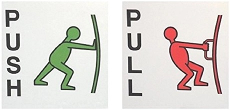
Examples of push and pull forces in everyday life
When you throw a ball, you are using force to make the ball move through the air. When you jump on a trampoline, gravity (a force) constantly pulls you down.
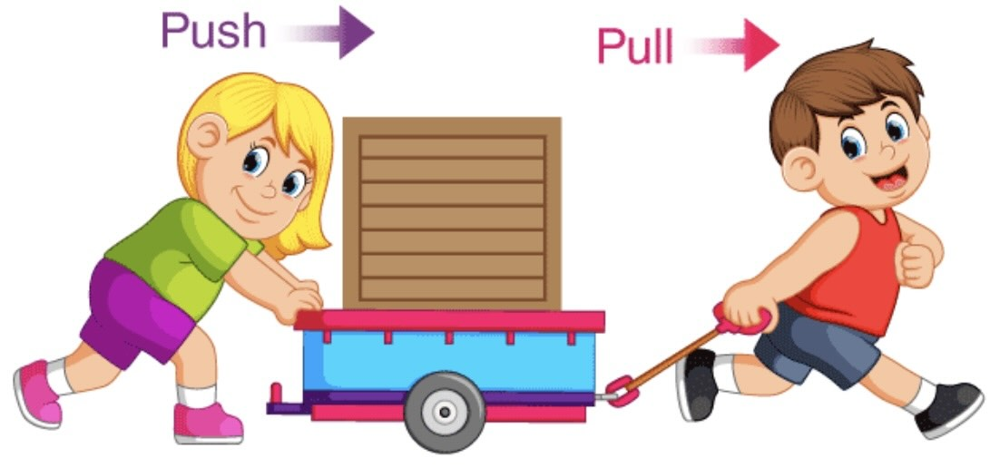
Children applying pushing and pulling forces to move a toy car
Multiple forces can act on an object at the same time. Think about riding a bike: your feet push the pedals, your hands push and pull the handlebars, your muscles help you stay balanced, and the tires push against the pavement while the pavement pushes back on them.
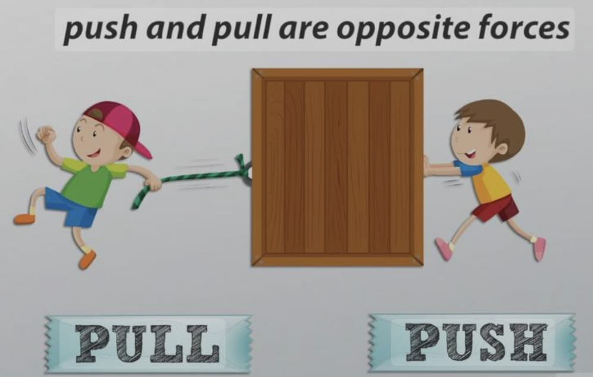
Push and pull are opposite types of forces
Important Properties of Forces
All forces have two important properties:
- Strength: How powerful the push or pull is
- Direction: Which way the force is applied
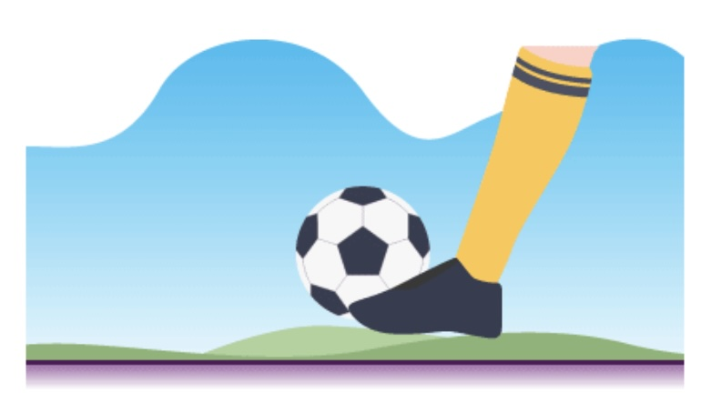
A soccer player applies both strength and direction when kicking the ball
Think about kicking a soccer ball to another player. You need to use:
- The right amount of strength (kick too softly and the ball won't reach your teammate; kick too hard and the ball will go past them)
- The correct direction to make sure the ball goes toward your teammate
Forces can be weak or strong. A light tap on a golf ball is a weak force, while hitting it hard is a strong force. The strength and direction of a force are equally important.
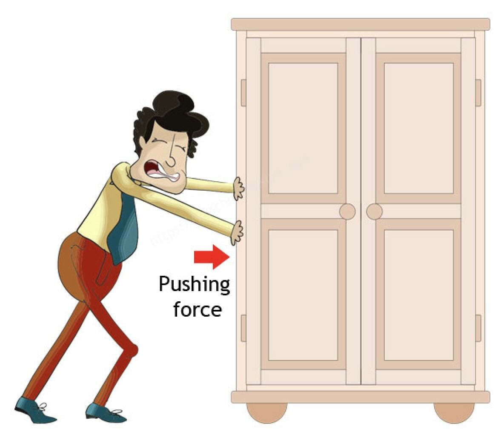
Applying a pushing force with different levels of strength
Balanced and Unbalanced Forces
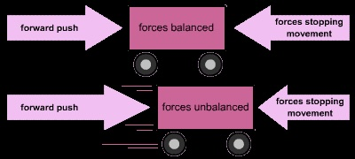
Diagram illustrating the concept of balanced and unbalanced forces
Balanced Forces
When two forces are the same strength but act in opposite directions, they are called balanced forces.
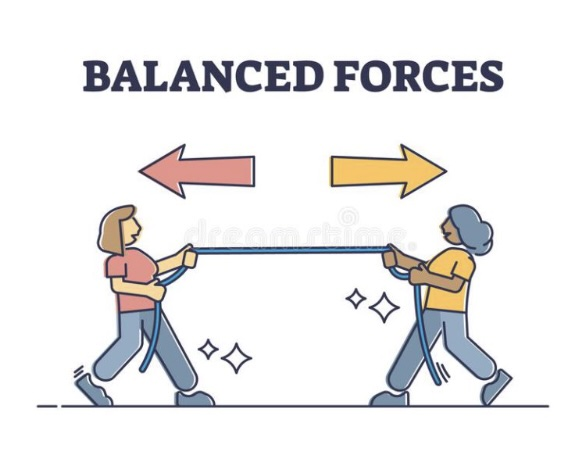
Balanced forces in a tug-of-war result in no movement
Tug-of-War Example: If people on each side of the rope are pulling with the same strength but in opposite directions, the forces are balanced and the rope doesn't move.
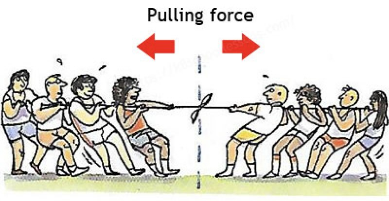
A tug-of-war demonstrates both balanced and unbalanced forces
When forces are balanced:
- The forces cancel each other out
- There is no change in motion
- If an object is stationary, it stays stationary
- If an object is moving at a constant speed in a straight line, it continues to do so
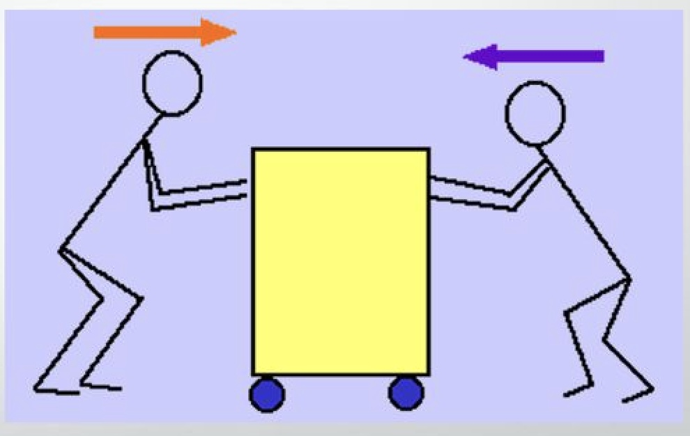
When two people push a box with equal force from opposite sides, the box doesn't move
Book on Table Example: A book resting on a table doesn't fall because of balanced forces. Gravity pulls the book down, but the table pushes up with an equal force.
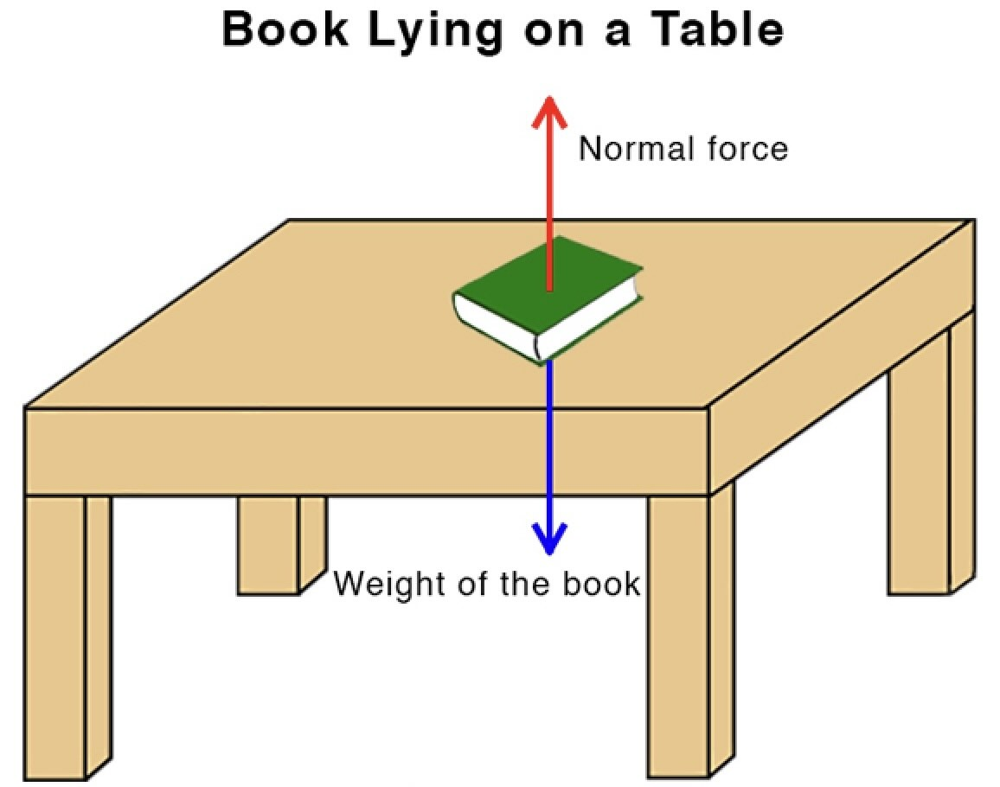
A book on a table demonstrates balanced forces - gravity pulling down and the table pushing up
Unbalanced Forces
When one force is stronger than another opposing force, they are called unbalanced forces.
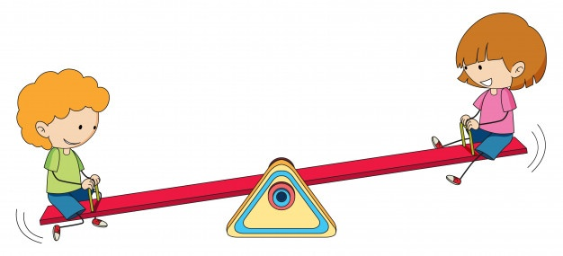
Children on a seesaw demonstrate unbalanced forces when one side is heavier
Unbalanced forces change the motion of an object in two ways:
- If an object is at rest (not moving) and an unbalanced force pushes or pulls it, the object will start moving
- If an object is already moving, unbalanced forces can change its speed or direction
Tug-of-War Example: If the players on one side of the rope use more force than the other side, they will create an unbalanced force. The rope (and the opposing team) will move toward the stronger side.
Dog Toy Example: When you and your dog are playing with a tug toy, you're applying forces in opposite directions. If you suddenly let go while the dog is tugging, the dog will fall backward because it experiences an unbalanced force (its own pulling force with no opposing force from you).
Gravity and Normal Force
Gravity is a force that attracts objects toward the center of the Earth. It's expressed in the saying "What goes up must come down!"

A person standing on the ground experiences balanced forces - gravity pulling down and the ground pushing up
When you stand on the ground, gravity pulls you downward, but the ground pushes back up with an equal force called the normal force. These balanced forces keep you from sinking into the ground.
When you throw a ball upward:
- Your throw provides an initial upward force
- Gravity continuously pulls the ball downward
- Eventually, the force of gravity overcomes the initial throwing force
- The ball slows down, stops momentarily at its highest point, then falls back down
Friction: An Important Force
Friction is a force that opposes motion when two surfaces are in contact. It can be both helpful and unhelpful.
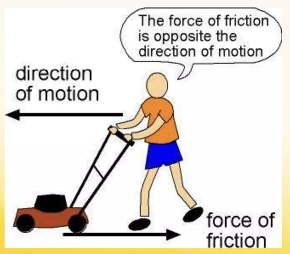
Friction occurs between surfaces that are in contact with each other
Helpful friction:
- Helps you walk without slipping
- Allows car tires to grip the road
- Lets you hold objects without them slipping from your hands
Unhelpful friction:
- Makes it harder to push heavy objects across the floor
- Causes wear and tear on moving machine parts
- Requires more fuel for vehicles to overcome
When you apply brakes on a bicycle, the friction between the brake pads and the wheel rim creates a force opposite to the direction of motion, causing the bicycle to slow down and eventually stop.
Forces in Everyday Life
Multiple Forces Acting Together
In real-life situations, multiple forces often act on an object at the same time:
Rocket Launch: During a rocket launch, multiple forces act on the rocket:
- Thrust force pushes the rocket upward
- Gravity pulls the rocket downward
- Air resistance opposes the rocket's motion
When the thrust force is greater than the combined forces of gravity and air resistance, the rocket moves upward (unbalanced forces).
Rocket scientists must be very careful about the direction that a rocket is launched. If there is even a small mistake in calculations, the rocket's direction will be off course and the mission will not be successful.
Changing Direction with Forces
To change the direction of a moving object, you need to apply a force in the new direction you want it to go.
Skateboarding: When riding a skateboard, you can:
- Push with your foot to increase speed (applying force in the direction of motion)
- Turn by shifting your weight and applying force in a different direction
- Stop by using your foot as a brake (applying force opposite to the direction of motion)
Key Vocabulary
Force
A push or a pull that can cause the motion of an object to change. It has two important properties: strength and direction.
Balanced Force
When two equal forces act in opposite directions, they cancel each other out and there is no motion.
Unbalanced Force
When one force is stronger than another opposing force, the result is motion or a change in motion.
Motion
The process of moving or changing position.
Strength
The amount of force that is applied to an object (how hard or soft a push or pull is).
Gravity
A force that attracts objects toward the Earth. "What goes up, must come down!"
Friction
A force that opposes motion when two surfaces are in contact with each other.
Normal Force
The force exerted by a surface on an object that is in contact with it, perpendicular to the surface.
Check Your Understanding
1. Analyze This Situation: A student is pushing a heavy box, but it doesn't move.
- What forces might be acting on the box?
- Are these forces balanced or unbalanced?
- What needs to change for the box to move?
2. Think About This: A ball is thrown straight up in the air.
- What forces are acting on the ball as it rises?
- Why does the ball slow down as it rises?
- What forces are acting on the ball when it reaches its highest point?
- Why does the ball fall back down?
3. Consider This Scenario: Two teams are pulling equally hard on opposite ends of a rope in tug-of-war.
- Are the forces balanced or unbalanced?
- Will the rope move? Why or why not?
- What would happen if one team suddenly stopped pulling?
4. Think About Different Slopes: A toy car rolls down different hills of varying steepness.
- On which hill will the car roll faster?
- How does the strength of the gravitational force change with the slope?
- What other forces might be acting on the car as it rolls?
Real-World Applications
Sports
In sports, understanding forces helps athletes perform better:
- In golf, controlling the strength and direction of your swing determines where the ball goes
- In soccer, applying the right amount of force in the correct direction helps you pass accurately
- In basketball, the force of your throw and the angle (direction) determine if the ball goes through the hoop
Transportation
Vehicles use forces to move, change direction, and stop:
- Engines provide forward force
- Steering changes the direction of force
- Brakes provide force in the opposite direction to slow down or stop
Simple Machines
Machines help us apply forces more effectively:
- Levers help us lift heavy objects with less effort
- Pulleys change the direction of force to make work easier
- Inclined planes (ramps) reduce the force needed to move objects to a higher position
Summary
- A force is a push or pull that can cause an object's motion to change
- Forces have two important properties: strength and direction
- Balanced forces are equal forces acting in opposite directions; they result in no change in motion
- Unbalanced forces occur when one force is stronger than an opposing force; they cause changes in motion
- Gravity is a force that pulls all objects toward the center of the Earth
- Friction is a force that opposes motion between surfaces that are in contact
- Multiple forces can act on an object at the same time
- To change an object's motion (start moving, stop moving, change direction), you need unbalanced forces